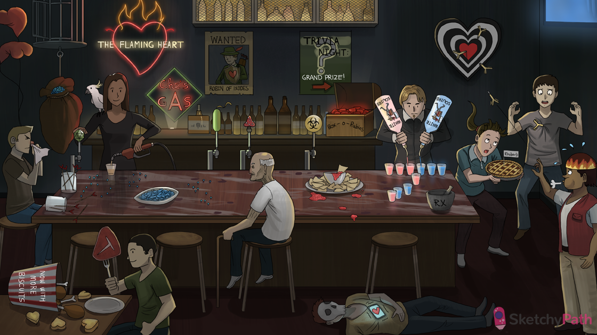

Flaming heart: myocarditis (inflammatory damage to the myocardium caused by infection, toxin exposure, or hypersensitivity reaction)
Cockatoo: infection with coxsackievirus B (an enterovirus) can cause myocarditis
Viral beer tap handle: viral infection (e.g. enterovirus, adenovirus, HIV, parvovirus, HHV 6) can cause myocarditis
Scattered blue bird seed: viral myocarditis shows an inflammatory infiltrate in the myocardium on histology
Spilled antibody toothpicks: viral damage to myocytes causes the release of cross-reactive antigens → autoantibodies target heart tissue
Dilated heart sack: myocarditis can lead to dilated cardiomyopathy
Failing heart balloon: myocarditis can lead to systolic heart failure
Blowing nose: viral myocarditis may be preceded by flu-like symptoms (~1 week prior)
Che’s gas: Chaga’s disease (infection with the protozoan Trypanosoma cruzi) may include myocardial involvement → myocarditis and dilated cardiomyopathy
Protozoal bar nuts: Trypanosoma cruzi infection of the myocardium shows dense collections of protozoa on histology
Bacterial beer tap handle: bacterial infection (e.g. Borrelia, Rickettsia, Mycoplasma) can cause myocarditis
“Robin of Ixodes”: Lyme disease (infection with the bacterium Borrelia burgdorferi) can include myocarditis
Heart shield: myocardial involvement in Lyme disease can manifest as heart block
Fungus beer tap handle: fungal infection (e.g. Candida, Mucor, Aspergillus) can cause myocarditis
Immunocompromised cane: fungal myocarditis is more common in immunocompromised
Toxin beer tap handle: toxins exposure (e.g. alcohol, carbon monoxide, cocaine, diuretics, antibiotics) can cause myocarditis
Chips and dip: Corynebacterium diphtheriae toxin can cause myocarditis
Box of rubies: anthracyclines (e.g. doxorubicin, daunorubicin) can cause free radical damage and myocarditis
Helper white squires: certain drugs can elicit a delayed type IV hypersensitivity reaction (helper T cell mediated) → hypersensitivity myocarditis
Mortar and pestle: drugs that cause hypersensitivity myocarditis include sulfa drugs, furosemide, HCTZ, ampicillin, azithromycin, and zidovudine
Blue and pink shot glasses: hypersensitivity myocarditis manifests histologically with lymphocytic and eosinophilic interstitial inflammatory infiltrates
Antibody darts: autoimmune diseases (e.g. SLE, scleroderma, and RA) can cause myocarditis
Rhubarb pie: acute rheumatic fever is associated with myocarditis (~2-4 weeks after Strep pyogenes pharyngitis via molecular mimicry)
Hot dyspneic dart thrower : myocarditis often presents with constitutional symptoms such as fever, malaise, and dyspnea
Dart in chest: myocarditis can produce a precordial chest pain that can mimic MI
Bucket of Chicken and T-bone: inflammation and myocardial damage from myocarditis can cause the release of troponins and CK MB
Passed out with vibrating heart: abnormal cardiac conduction from inflammation in myocarditis can lead to fatal arrhythmia and sudden cardiac death